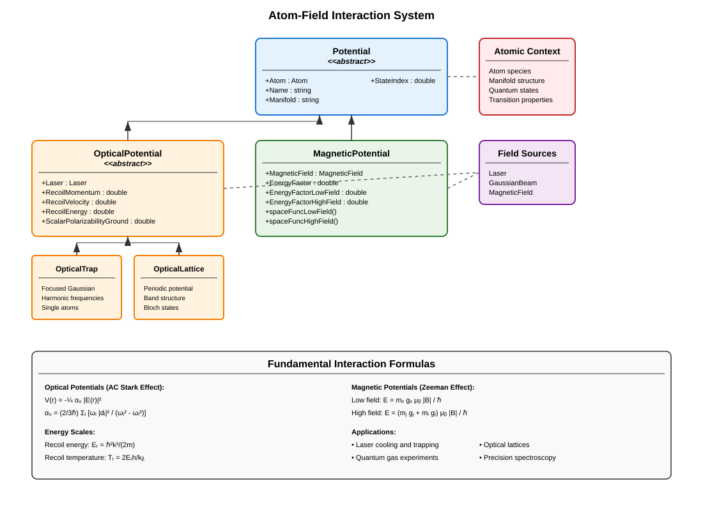

Interactions Between Atom and Field#
The atom-field interaction framework provides comprehensive modeling of how electromagnetic fields interact with atomic systems to create trapping, cooling, and manipulation potentials. This system combines the atomic structure calculations with laser and magnetic field configurations to compute realistic interaction strengths and spatial potential landscapes.
Overview#
The interaction framework encompasses several types of atom-field couplings:
Optical potentials: AC Stark shifts from laser intensity
Magnetic potentials: Zeeman energy shifts from magnetic fields
Optical lattices: Periodic potentials from standing wave interference
Optical traps: Localized trapping from focused laser beams
Hybrid potentials: Combined optical and magnetic interactions
These interactions form the basis for all atomic manipulation techniques in AMO physics, from laser cooling to quantum gas experiments.
Potential System Architecture#
{kind=link}

Potential Base Class#
The Potential abstract base class provides the foundation for all atom-field interactions:
Core Properties:
Atom: Atomic species context for calculationsName: Human-readable potential identifierManifold: Atomic manifold for the interactionStateIndex: Specific quantum state within the manifold
Basic Construction:
% All potentials require an atom context
atom = Lithium7();
% Concrete potentials specify field sources
% (See OpticalTrap, OpticalLattice, MagneticPotential examples below)
Optical Potentials#
OpticalPotential Base Class#
The OpticalPotential class handles laser-atom interactions through the AC Stark effect:
Physical Principles:
The optical potential arises from the AC Stark shift:
where \(\alpha_0\) is the scalar polarizability.
Key Properties:
Laser: Driving laser field configurationRecoilMomentum: \(p_r = \hbar k\) [kg·m/s]RecoilVelocity: \(v_r = p_r/m\) [m/s]RecoilEnergy: \(E_r/h\) [Hz]RecoilTemperature: \(T_r = 2 E_r h / k_B\) [K]ScalarPolarizabilityGround: \(\alpha_0\) [Hz/(V/m)²]
Polarizability Calculation:
The scalar polarizability includes contributions from both D1 and D2 transitions:
% Polarizability automatically calculated from atomic data
atom = Rubidium87();
laser = Laser(wavelength = 1064e-9); % Far-detuned IR laser
opticalPot = OpticalTrap(atom, laser);
alpha0 = opticalPot.ScalarPolarizabilityGround; % [Hz/(V/m)²]
OpticalTrap Class#
Focused Gaussian beam dipole traps for single atoms and small ensembles:
Trap Properties:
Depth: Maximum trap depth [Hz]AxialFrequency: Axial harmonic frequency [Hz]RadialFrequency: Radial harmonic frequency [Hz]
Scaling Relations:
% Create optical dipole trap
atom = Lithium7();
trapBeam = GaussianBeam(waist = [30e-6; 30e-6], power = 100e-3, wavelength = 1064e-9);
dipole_trap = OpticalTrap(atom, trapBeam, "MainTrap");
% Calculate trap properties
trap_depth = dipole_trap.Depth; % [Hz]
f_axial = dipole_trap.AxialFrequency; % [Hz]
f_radial = dipole_trap.RadialFrequency; % [Hz]
% Convert to convenient units
depth_uK = trap_depth / Constants.SI("kB") * 1e6; % [μK]
fprintf('Trap depth: %.1f μK\n', depth_uK);
fprintf('Axial frequency: %.1f Hz\n', f_axial);
fprintf('Radial frequency: %.1f Hz\n', f_radial);
Intensity Dependence:
% Trap depth scales linearly with laser intensity
powers = [10e-3, 50e-3, 100e-3, 200e-3]; % [W]
depths = zeros(size(powers));
for i = 1:length(powers)
trapBeam.Power = powers(i);
depths(i) = dipole_trap.Depth;
end
% Plot scaling relationship
figure; plot(powers*1e3, depths/Constants.SI("kB")*1e6);
xlabel('Laser Power [mW]'); ylabel('Trap Depth [μK]');
OpticalLattice Class#
Periodic optical potentials for quantum gas experiments:
Lattice Properties:
LatticeSpacing: \(a = \lambda/2\) [m]Depth: Lattice depth [Hz] from various calibrationsDepthLu: Dimensionless depth in recoil unitsAxialFrequency: Axial trap frequency [Hz]RadialFrequency: Radial trap frequency [Hz]
Multiple Depth Calibrations:
atom = Lithium7();
lattice_laser = Laser(wavelength = 1064e-9, intensity = 1e6);
optical_lattice = OpticalLattice(atom, lattice_laser, "MainLattice");
% Different depth calibration methods
optical_lattice.DepthKd = 25 * 2*pi * 25e3; % Kapitza-Dirac [Hz]
optical_lattice.DepthSpec = 24 * 2*pi * 25e3; % Spectroscopy [Hz]
% Access best available depth
depth_best = optical_lattice.Depth; % [Hz]
depth_recoil = optical_lattice.DepthLu; % [E_r]
Band Structure Calculations:
% Lattice provides access to band structure
lattice_spacing = optical_lattice.LatticeSpacing; % λ/2
% Recoil energy scale
Er = optical_lattice.RecoilEnergy; % [Hz]
% Trap frequencies from lattice depth
f_axial = optical_lattice.AxialFrequency; % [Hz]
f_radial = optical_lattice.RadialFrequency; % [Hz]
Advanced Lattice Features:
% Band structure properties (when calculated)
% band_energies = optical_lattice.BandEnergy; % E_n(q)
% bloch_states = optical_lattice.BlochState; % ψ_n,q(x)
% berry_connection = optical_lattice.BerryConnection; % Geometric phases
Magnetic Potentials#
MagneticPotential Class#
Zeeman energy shifts from magnetic field interactions:
Energy Regimes:
The system automatically handles different magnetic field regimes:
Low Field (Linear Zeeman):
High Field (Paschen-Back):
Automatic Regime Selection:
atom = Lithium7();
magnetic_field = MagneticField(bias = [0; 0; 1e-4]); % 1 G
mag_potential = MagneticPotential(atom, magnetic_field, "MagTrap", ...
manifold = "DGround", stateIndex = 1);
% Energy factors automatically selected based on field strength
alpha_effective = mag_potential.EnergyFactor; % [Hz/T]
alpha_low = mag_potential.EnergyFactorLowField; % [Hz/T]
alpha_high = mag_potential.EnergyFactorHighField; % [Hz/T]
Spatial Potential Functions:
% Generate spatial potential functions
V_low_field = mag_potential.spaceFuncLowField();
V_high_field = mag_potential.spaceFuncHighField();
% Evaluate potential at specific positions
positions = [0, 1e-3, 2e-3; 0, 0, 0; 0, 0, 0]; % [m]
energies = V_low_field(positions); % [Hz]
% Convert to temperature units
temperatures = energies / Constants.SI("kB"); % [K]
Magnetic Trap Design:
% Quadrupole magnetic trap
grad_matrix = diag([10, 10, -20]) * 1e-2; % [T/m]
quad_field = MagneticField(gradient = grad_matrix);
% Ioffe-Pritchard trap with bias
ip_field = MagneticField(bias = [0; 0; 1e-4], gradient = grad_matrix);
% Create magnetic potentials
quad_trap = MagneticPotential(atom, quad_field, "Quadrupole");
ip_trap = MagneticPotential(atom, ip_field, "IoeffePritchard");
Interaction Energy Scales#
Optical Interaction Strengths:
atom = Rubidium87();
% Red-detuned dipole trap (attractive)
red_laser = Laser(wavelength = 1064e-9, intensity = 1e6); % [W/m²]
red_trap = OpticalTrap(atom, red_laser);
depth_red = red_trap.Depth; % Negative (attractive)
% Blue-detuned dipole trap (repulsive)
blue_laser = Laser(wavelength = 500e-9, intensity = 1e6); % [W/m²]
blue_trap = OpticalTrap(atom, blue_laser);
depth_blue = blue_trap.Depth; % Positive (repulsive)
Magnetic Interaction Strengths:
% Compare different atomic states
f1_state = 1; % F=1 manifold
f2_state = 2; % F=2 manifold
mag_f1 = MagneticPotential(atom, magnetic_field, "F1_trap", stateIndex = f1_state);
mag_f2 = MagneticPotential(atom, magnetic_field, "F2_trap", stateIndex = f2_state);
alpha_f1 = mag_f1.EnergyFactor; % [Hz/T]
alpha_f2 = mag_f2.EnergyFactor; % [Hz/T]
% F=2 states are typically more strongly trapped
Energy Scale Comparisons:
% Compare optical vs. magnetic trapping strengths
optical_depth = abs(red_trap.Depth);
magnetic_depth = abs(mag_f2.EnergyFactor * norm(magnetic_field.Bias));
fprintf('Optical trap depth: %.2f μK\n', optical_depth/Constants.SI("kB")*1e6);
fprintf('Magnetic trap depth: %.2f μK\n', magnetic_depth/Constants.SI("kB")*1e6);
Advanced Interaction Calculations#
Hybrid Trapping Systems#
Combining optical and magnetic potentials for enhanced control:
% Create hybrid trap system
atom = Lithium7();
% Optical component (weak confinement)
optical_beam = GaussianBeam(waist = [100e-6; 100e-6], power = 50e-3, wavelength = 1064e-9);
optical_component = OpticalTrap(atom, optical_beam, "OpticalGuide");
% Magnetic component (strong confinement)
magnetic_field = MagneticField(bias = [0; 0; 5e-4], gradient = diag([20, 20, -40])*1e-2);
magnetic_component = MagneticPotential(atom, magnetic_field, "MagneticTrap");
% Combined potential analysis
V_optical = optical_component.Depth;
V_magnetic = magnetic_component.EnergyFactor * norm(magnetic_field.Bias);
% Determine dominant trapping mechanism
if abs(V_optical) > abs(V_magnetic)
dominant = "optical";
else
dominant = "magnetic";
end
Multi-Species Interactions#
Handling different atomic species in the same fields:
% Different species in shared fields
li7 = Lithium7();
rb87 = Rubidium87();
% Shared optical field
shared_laser = Laser(wavelength = 1064e-9, intensity = 1e6);
% Species-specific optical potentials
li_optical = OpticalTrap(li7, shared_laser, "Li_Optical");
rb_optical = OpticalTrap(rb87, shared_laser, "Rb_Optical");
% Compare interaction strengths
alpha_li = li_optical.ScalarPolarizabilityGround;
alpha_rb = rb_optical.ScalarPolarizabilityGround;
ratio = alpha_rb / alpha_li;
fprintf('Rb/Li polarizability ratio: %.2f\n', ratio);
Mass-Dependent Effects:
% Recoil energies scale as 1/mass
Er_li = li_optical.RecoilEnergy; % [Hz]
Er_rb = rb_optical.RecoilEnergy; % [Hz]
mass_ratio = rb87.mass / li7.mass;
recoil_ratio = Er_li / Er_rb;
% Verify scaling: recoil_ratio ≈ mass_ratio
State-Dependent Interactions#
Zeeman State Selection:
atom = Rubidium87();
magnetic_field = MagneticField(bias = [0; 0; 2e-4]); % 2 G
% Different magnetic sublevels
mF_states = [-2, -1, 0, 1, 2]; % F=2 Zeeman sublevels
for i = 1:length(mF_states)
% Find state index for specific mF
ground_states = atom.DGround.StateList;
state_idx = find(ground_states.F == 2 & ground_states.MF == mF_states(i));
% Create state-specific potential
mag_pot = MagneticPotential(atom, magnetic_field, sprintf("mF_%d", mF_states(i)), ...
stateIndex = state_idx);
energy_factor = mag_pot.EnergyFactor;
fprintf('mF = %d: α = %.2e Hz/T\n', mF_states(i), energy_factor);
end
Polarization-Dependent Optical Interactions:
% Vector polarizability for different light polarizations
% (Implementation depends on specific atomic structure)
% Linear polarization
linear_laser = Laser(wavelength = 780e-9, polarization = [1; 0; 0]);
% Circular polarization
circular_laser = Laser(wavelength = 780e-9, polarization = [1; 1i; 0]/sqrt(2));
Lattice Physics Applications#
Band Structure and Tunneling:
atom = Lithium7();
lattice_laser = Laser(wavelength = 1064e-9, intensity = 5e5);
lattice = OpticalLattice(atom, lattice_laser, "1D_Lattice");
lattice.DepthKd = 10 * 2*pi * 25e3; % 10 E_r depth
% Lattice energy scales
Er = lattice.RecoilEnergy; % [Hz]
lattice_depth = lattice.Depth; % [Hz]
depth_recoil = lattice_depth / Er; % Dimensionless depth
% Tunneling rate (tight-binding approximation)
J_tunneling = 4 * Er / sqrt(pi) * (depth_recoil)^(3/4) * exp(-2*sqrt(depth_recoil));
Harmonic Approximation:
% Harmonic frequencies at lattice sites
f_axial = lattice.AxialFrequency; % Along lattice direction
f_radial = lattice.RadialFrequency; % Perpendicular to lattice
% Harmonic oscillator length
a_ho_axial = sqrt(Constants.SI("hbar") / (2*pi*f_axial) / atom.mass);
a_ho_radial = sqrt(Constants.SI("hbar") / (2*pi*f_radial) / atom.mass);
Interaction Dynamics#
Light Scattering:
% Photon scattering rate
atom = Rubidium87();
laser_intensity = 1e3; % [W/m²]
saturation_intensity = atom.CyclerSaturationIntensity;
natural_linewidth = atom.D2.NaturalLinewidth * 2*pi; % [rad/s]
saturation_parameter = laser_intensity / saturation_intensity;
scattering_rate = natural_linewidth * saturation_parameter / (1 + saturation_parameter);
% Heating rate from photon recoil
recoil_energy = atom.D2.RecoilEnergy;
heating_rate = scattering_rate * recoil_energy; % [Hz²]
Doppler Cooling:
% Doppler cooling parameters
T_doppler = atom.D2.DopplerTemperature; % [K]
v_capture = natural_linewidth / (2 * atom.D2.AngularWavenumber); % [m/s]
% Friction coefficient
k = atom.D2.AngularWavenumber;
beta = natural_linewidth * k^2 / 2; % [kg/s]
AC Stark Shift Calculations:
% Detailed AC Stark shift calculation
laser = Laser(wavelength = 1064e-9, intensity = 1e6);
% Detunings from atomic transitions
omega_laser = laser.AngularFrequency;
omega_D1 = atom.D1.Frequency * 2*pi;
omega_D2 = atom.D2.Frequency * 2*pi;
delta_D1 = omega_laser - omega_D1; % Detuning from D1
delta_D2 = omega_laser - omega_D2; % Detuning from D2
% AC Stark shift contributions
shift_D1 = (laser.ElectricFieldAmplitude^2 / 4) * alpha_D1 / delta_D1;
shift_D2 = (laser.ElectricFieldAmplitude^2 / 4) * alpha_D2 / delta_D2;
Experimental Applications#
BEC Formation:
% Evaporative cooling in magnetic trap
atom = Rubidium87();
evap_field = MagneticField(bias = [0; 0; 2e-4]); % Initial 2 G bias
mag_trap = MagneticPotential(atom, evap_field, "EvapTrap");
% Calculate trap depth for different field strengths
field_strengths = linspace(0.5e-4, 2e-4, 20); % [T]
trap_depths = zeros(size(field_strengths));
for i = 1:length(field_strengths)
evap_field.Bias = [0; 0; field_strengths(i)];
trap_depths(i) = mag_trap.EnergyFactor * field_strengths(i);
end
% Convert to temperature
trap_temps = trap_depths / Constants.SI("kB") * 1e6; % [μK]
Optical Lattice Loading:
% Adiabatic lattice loading sequence
atom = Lithium7();
% Initial dipole trap
loading_beam = GaussianBeam(waist = [50e-6; 50e-6], power = 200e-3, wavelength = 1064e-9);
loading_trap = OpticalTrap(atom, loading_beam, "Loader");
% Target lattice
lattice_beam = Laser(wavelength = 1064e-9, intensity = 1e5);
target_lattice = OpticalLattice(atom, lattice_beam, "Target");
% Compare energy scales for adiabatic loading
trap_freq = loading_trap.RadialFrequency;
lattice_freq = target_lattice.RadialFrequency;
adiabatic_criterion = trap_freq / lattice_freq; % Should be << 1
Best Practices#
Atomic Data Validation: - Cross-check calculated properties with experimental values - Verify energy level ordering and transition frequencies - Confirm that matrix elements satisfy selection rules
Interaction Strength Estimation: - Calculate realistic field parameters for experimental conditions - Consider decoherence and heating mechanisms - Validate trap depths against thermal energy scales
Numerical Precision: - Use appropriate precision for quantum mechanical calculations - Be aware of numerical limitations in matrix diagonalization - Validate orthogonality of quantum states
Physical Consistency: - Ensure energy conservation in interaction calculations - Check that calculated forces are physically reasonable - Verify that trap frequencies match harmonic approximations
Performance Optimization: - Cache expensive atomic structure calculations - Use pre-calculated manifold data when possible - Consider vectorization for parameter sweeps
The atom-field interaction framework provides the essential coupling between atomic structure and electromagnetic fields, enabling precise modeling of all atomic manipulation techniques used in modern AMO physics experiments. Its integration with accurate atomic data ensures quantitative agreement with experimental observations while providing the flexibility needed for exploring new interaction regimes.